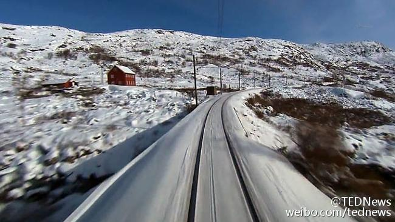

“互联网把信息民主化了，这是好事。但同时，它和有线电视一起，使得人们可以活在'过滤泡沫（filter bubble）'里，在里面只能看到他们本来已经赞同的信息。” 是啊，这个时代，我们有充分的自由选择获取什么信息，也就有充分自由根本不听不爱听的东西。这是不是让人们的观点更加极端呢？

斯图亚特9
2015-03-11
斯图亚特9
2015-03-11
@TEDNews:
挪威国家电视台有一档世上最无聊的栏目，代表作有：用固定镜头拍摄一辆行驶中的火车长达7小时；用5天6夜直播一艘游艇漫游海岸；举国编织之夜（8小时直播织毛衣）；举国篝火之夜（对着一堆篝火拍8小时）；三文鱼逆流游水18小时……然而这些节目的收视率惊人火爆，观众如上瘾一般！ 世界上最无聊的电视节目...为什么却让人迷得无可救药
世界上最无聊的电视节目...为什么却让人迷得无可救药
- 

1万次播放
00:00